MySQL安装及配置超详细教程
首先下载安装包 [网址]（https://dev.mysql.com/downloads/file/?id=476233） 进入页面后可以不登录。后点击底部”No thanks, just start my download.”即可开始下载。
安装：
直接把压缩包解压到你想安装的路径即可，相当于不用安装，可以看到我的解压路径在D盘的ROUTE文件夹下的mysql8文件夹中，下图画红线的Date文件夹和my.ini文件是解压时本没有的，这里先不说，后面会讲
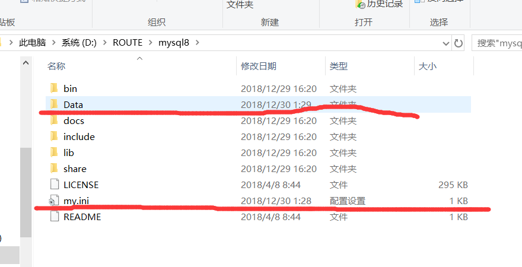
我安装的时候，先在解压到的文件夹下创建了my.ini文件，其中代码如下：
1 | [mysqld] |
关于3360端口没什么好说的，MySQL默认端口可能会被占用，修改端口即可。
然后上面写的路径是我电脑上的相关路径，第二处（D:\ROUTE\mysql8\Data）Date就是指在接下来初始化时会自行创建的文件夹，你就别改了，跟我先做一遍再说。然后保存即可。
配置环境变量
然后我们来配置环境变量
右键此电脑选择属性
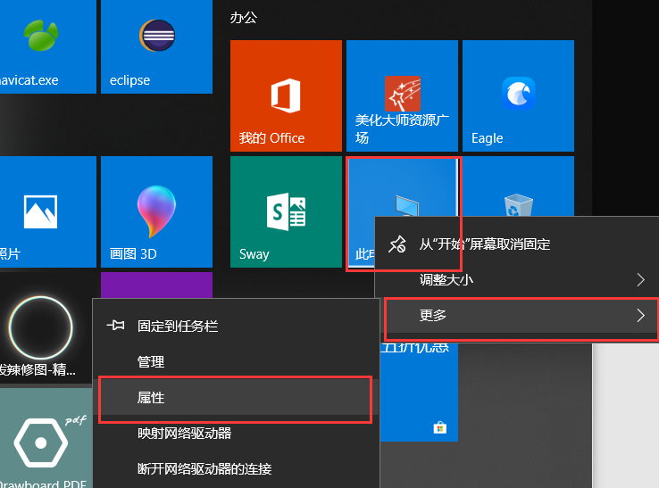
然后点击“高级系统设置”
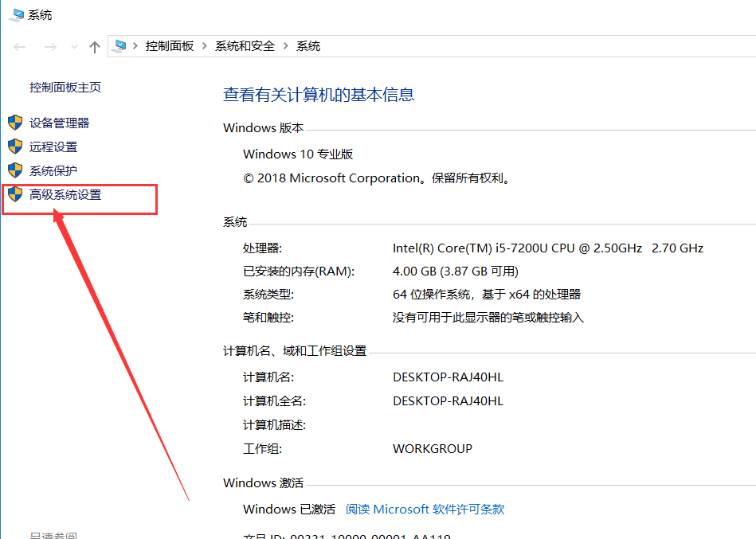
点击环境变量
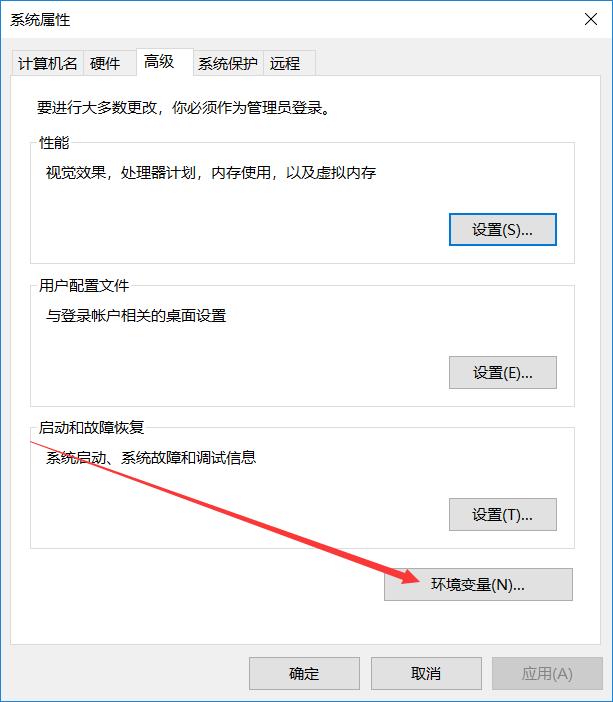
在系统变量下找到path，点一下path然后再点击“编辑”
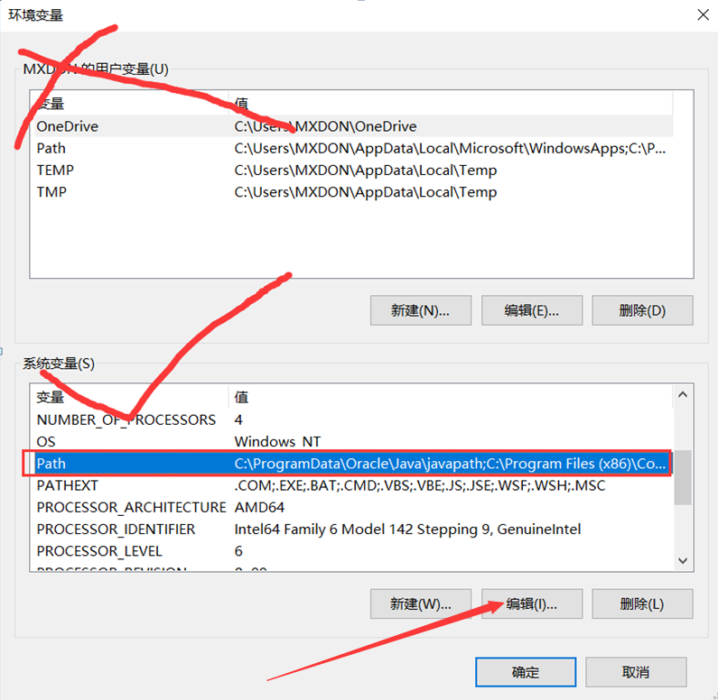
然后点新建，再点浏览
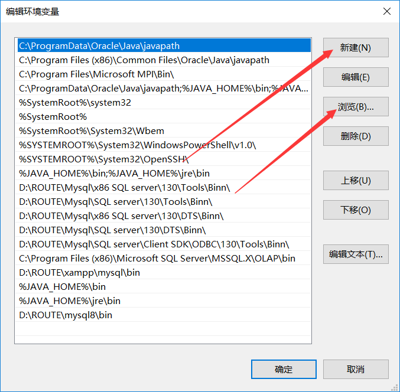
选择bin文件的目录点确定就ok，然后退出时依此确定保存即可，环境变量配置成功。
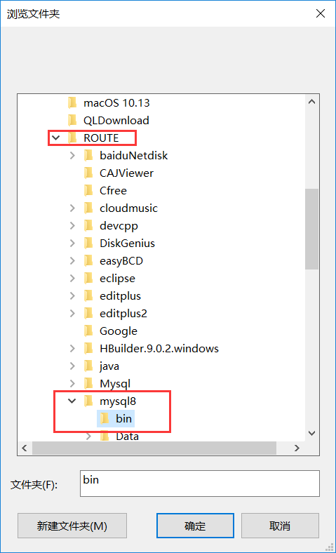
数据库初始化
接下来进行数据库初始化
找到cmd，这里要以管理员身份运行，怎么操作呢？
我们打开运行(win 和 R一起按），输入cmd回车
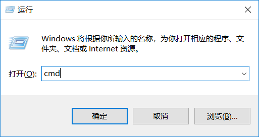
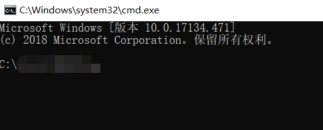
可以看到上面写着C:\Windows\System32\cmd.exe
然后我们找到这个路径，右键以管理员身份运行就ok
(当然也可以直接在搜索框中搜索cmd然后右键以管理员身份运行就行了，这里就不演示了。)
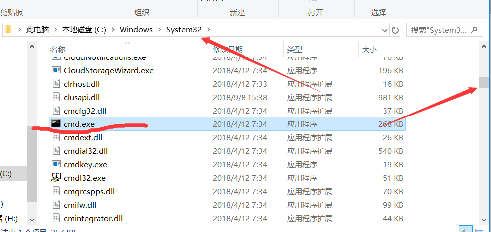
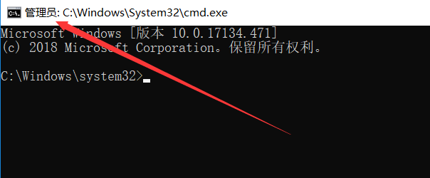
然后打开到bin目录下：
如果不在C盘，比如我的在D盘，就要先输入D:
因为从C盘到其他盘必须先转到其他盘以后才能使用cd命令
然后输入cd ROUTE\mysql8\bin
如果在C盘就直接用cd按照上述形式打开即可
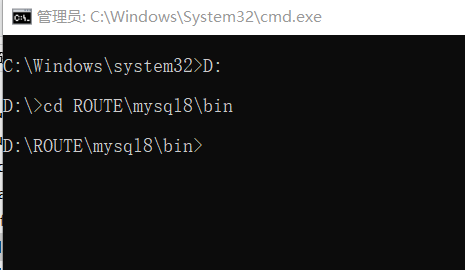
然后输入mysqld –initialize –console
注意是mysqld不是mysql，是两个横不是一个横，单词后面有一个空格！
然后回车
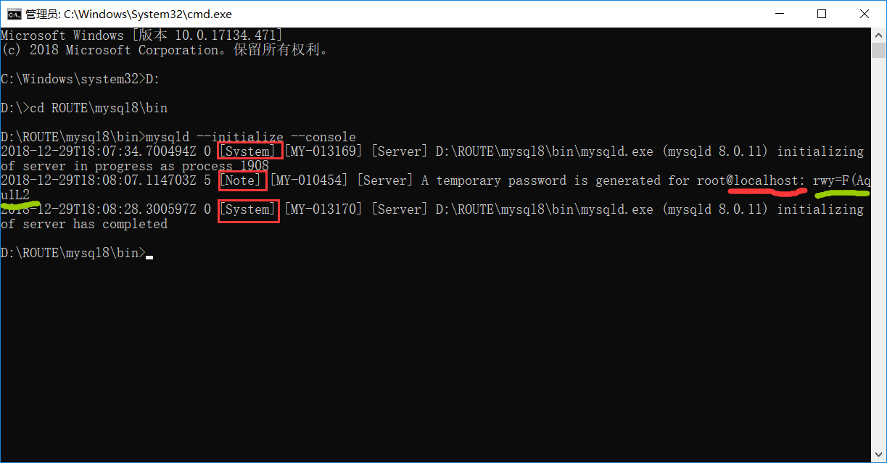
这个显示过程大概30秒吧
效果图如上，三个方框里显示的内容是固定的，顺序也固定，多显示或许没问题，少显示一定有问题，warning只是警告，千万别有error
然后这里一定记住！！！！！！！
@localhost：后面的几个奇怪字符是初始化密码，千万记住，要不然忘记密码的改密码很麻烦！！！！看不懂字的看图！！！！
然后继续输入mysqld –install
注意：mysqld不是mysql，中间有空格，两横不是一横！！！
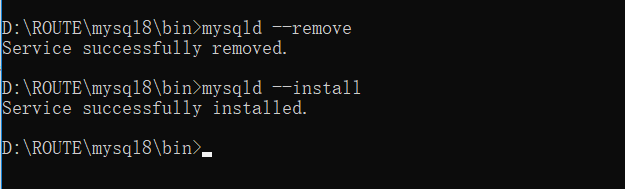
我这演示了一边移除，然后进行的安装，如上图显示就基本大功告成了
然后我们关闭cmd黑窗口（别忘了密码!!!密码!!!密码!!!），再按照之前的步骤从新以管理员身份打开一个新的cmd窗口
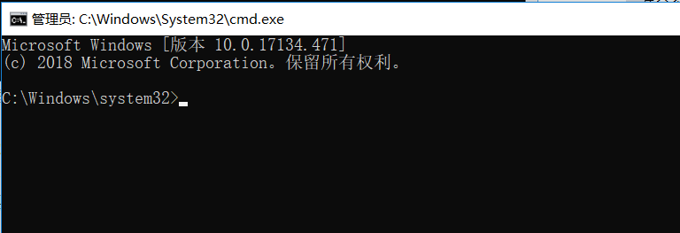
输入net start mysql命令来开启mysql服务
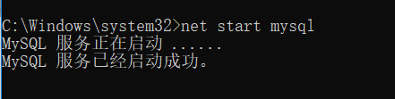
然后输入mysql -u root –p
来进入数据库，这是会让你输入密码！！！！！
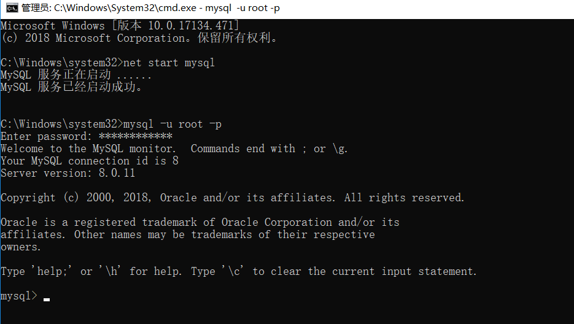
改密码
然后改一个好记的密码
继续输入alter user ‘root‘@’localhost’identified with mysql_native_password by ‘新密码’;
注意！！！！！上面的句子是不区分大小写的，但是密码好像区分！不过符号还是都用英文符号来写吧，因为我用中文失败过。。。。还有！！！！句末有英文分号看清楚，不能少！！！
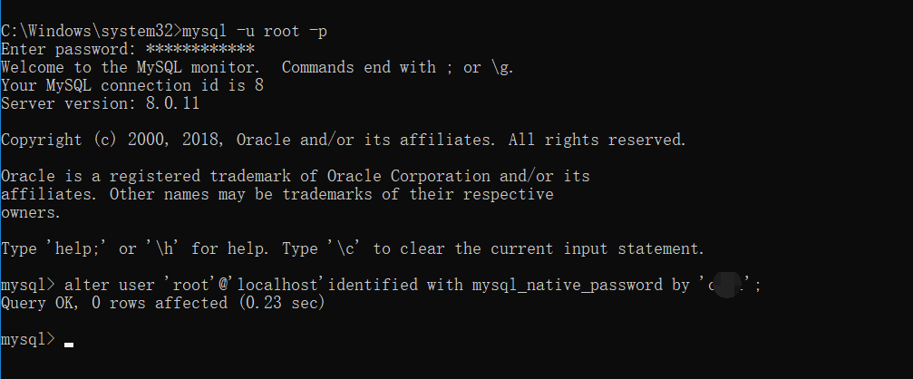
完成
这个时候就算是完成了。
注意：如果有问题都会报错，自己动手搜索才能完全解决自己的问题